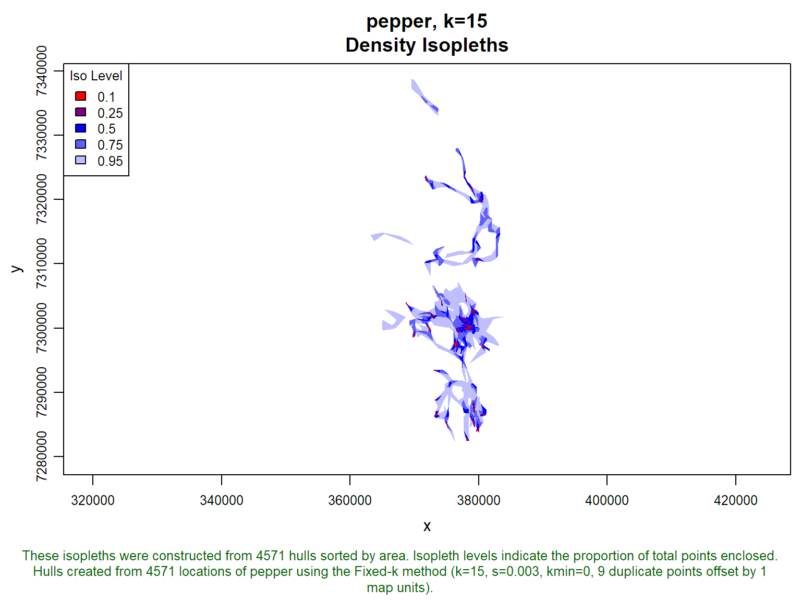

Working with Online Data
There are several ways to download data and work with it in R.
Go to a site that has downloadable data (e.g., https://data.sfgov.org/, https://www.census.gov/geo/maps-data/, http://www.californiaschoolcampusdatabase.org/)
Using a browser, FTP program, R's download.file() function, the wget command line utility, etc., download files to your computer, taking note where they go.
Unzip the file if needed
Import the file using standard R functions (read.csv(), readOGR(), raster(), etc.)
A connection object like a phone line. You open it with a command. While it's open, you use other commands to download files. When you're done, you close it.
There are several types of connections, including connections to compressed files, URLs, pipes, sockets, etc.
You can have multiple connections open at once (up to 128). You should make it a habit to explicitly close connections in your code when you're done with them
Example: Download a RData file saved on a website
mycon <- url("http://tlocoh.r-forge.r-project.org/pepper.n4571.s0.003.k15.iso.lhs.01.RData")
load(mycon)
close(mycon)
require(tlocoh)
plot(pepper.lhs.k15, iso=TRUE)
Example 2. Import a Text File on a FTP Server
Many functions that import data can accept a connection object. These functions usually open and close the connection object automatically, but see the help pages for deatils.
co2 <- read.table("ftp://aftp.cmdl.noaa.gov/products/trends/co2/co2_mm_mlo.txt", comment='#')
str(co2)## 'data.frame': 722 obs. of 7 variables:
## $ V1: int 1958 1958 1958 1958 1958 1958 1958 1958 1958 1958 ...
## $ V2: int 3 4 5 6 7 8 9 10 11 12 ...
## $ V3: num 1958 1958 1958 1958 1959 ...
## $ V4: num 316 317 318 -100 316 ...
## $ V5: num 316 317 318 317 316 ...
## $ V6: num 315 315 315 315 315 ...
## $ V7: int -1 -1 -1 -1 -1 -1 -1 -1 -1 -1 ...API stands for Application Programming Interface.
It is both a translator and a messenger between two different programs.
Many R packages use APIs to call libraries written in C
Example: Call a geos function using rgeos
WebAPIs are API protocols for communicating with a web server. They often use the URL to pass arguments.
Example: the UC Census Bureau has a geocoding service. If you pass a URL in the following form, it will return matched addresses in a standard format that can be parsed into a data frame.
https://geocoding.geo.census.gov/geocoder/*returntype*/searchtype?*parameters*
It's not hard to write R scripts to interact with APIs. But it's even easier to use a package that has wrapper functions.
Packages that Wrap API Calls in R Functions
ggmap - Google Maps (tiles)
raster - GADM, SRTM, countries, etc.
geoknife - USGS Data
censusapi, also tidycensus - US Census Data